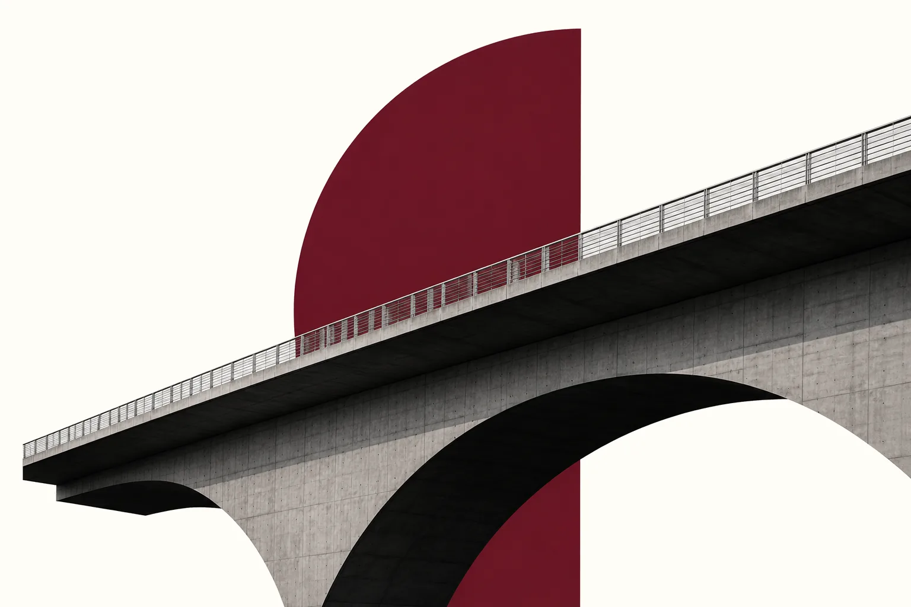

Diagnóstico de marca
Análise estratégica da marca, comunicação, percepção, diferenciais, posicionamento e oportunidades de crescimento.
Nossa metodologia combina diagnóstico de marca, posicionamento estratégico e comunicação para construir marcas mais claras, fortes e preparadas para crescer.

01
Investigamos a marca, o negócio, o mercado, o público, a comunicação atual e os pontos de desalinhamento que impedem a marca de crescer com clareza.
02
Definimos posicionamento, território de marca, diferenciais, proposta de valor, narrativa e caminhos prioritários para atingir o objetivo do seu negócio.
03
Organizamos mensagens, tom de voz, pilares de conteúdo, argumentos comerciais e diretrizes para tornar a comunicação mais clara e consistente.
04
Quando o projeto exige execução, conectamos a marca aos profissionais estratégicos certos para transformar o plano em entrega.
05
Apoiamos a evolução da marca para que estratégia, comunicação e execução permaneçam alinhadas ao crescimento.
Análise estratégica da marca, comunicação, percepção, diferenciais, posicionamento e oportunidades de crescimento.
Direção estratégica para marcas que precisam ganhar clareza, fortalecer presença e aumentar valor percebido.
Definição de território, público, proposta de valor, narrativa e diferenciais competitivos.
Planejamento de mensagens, canais, conteúdo e presença para comunicar com mais consistência e intenção.
Construção da linguagem verbal da marca para criar reconhecimento, conexão e autoridade.
Estrutura de pilares, pautas e direcionamento editorial alinhado ao posicionamento da marca.
Conexão com profissionais e parceiros para executar identidade visual, conteúdo, tráfego, site, vídeo, social media e outras frentes necessárias.
Acompanhamento para fundadores, empreendedores e equipes que precisam tomar decisões de marca, comunicação e posicionamento com mais clareza.
Branding estratégico torna o crescimento mais consistente porque organiza a forma como a marca é percebida, lembrada, escolhida e recomendada.
Performance pode trazer o cliente até você, mas a marca forte faz ele entender por que deve ficar